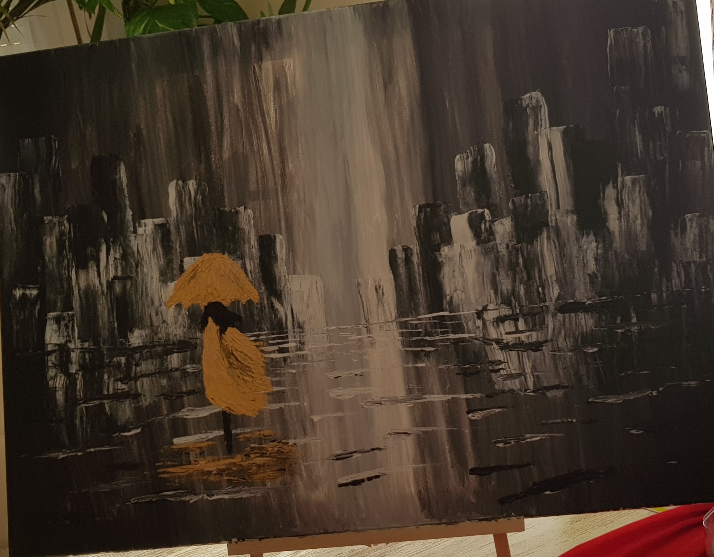
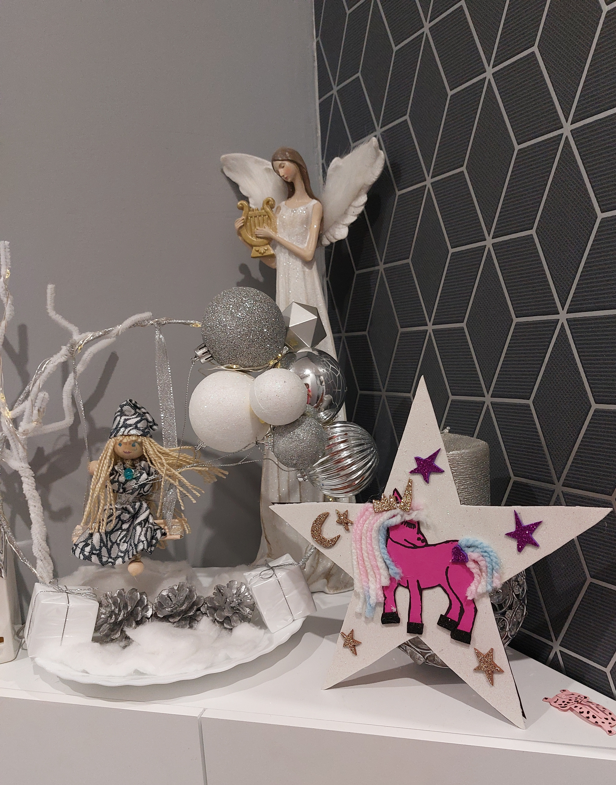

- Pintar
- Musica
- Manualidades
Pintar
Pintar segnifica representar algo en una superficie mediante líneas, colores o trazos o mediante su combinación, generalmente con una finalidad estética.
PintarMusica

Arte de combinar los sonidos en una secuencia temporal atendiendo a las leyes de la armonía, la melodía y el ritmo, o de producirlos con instrumentos musicales.
MusicaManualidades
Las manualidades, en términos generales, son trabajos efectuados con las manos, con o sin ayuda de herramientas como ejercicio de desarrollo creativo. Por extensión, el resultado de dicha labor también es conocido como manualidad.
Manualidades